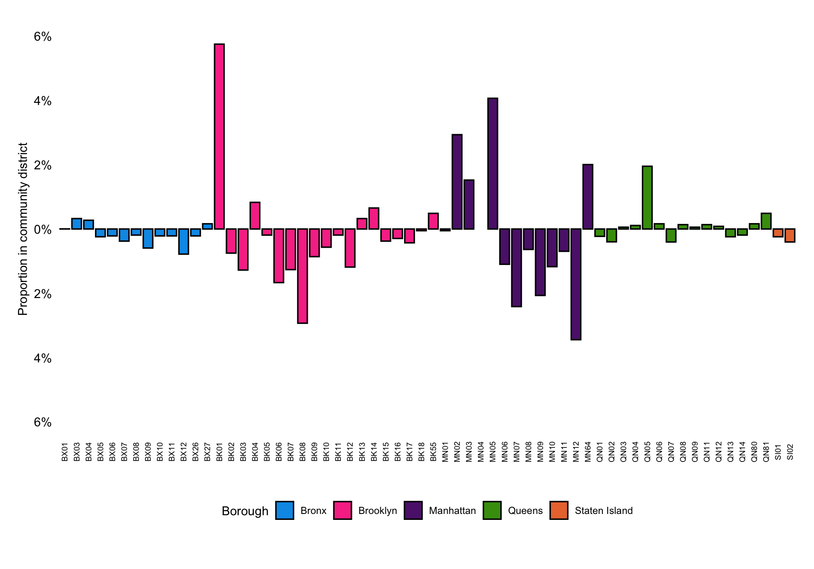

| Variable | Physical or sexual contact in group setting in past 4 weeks | p-value2 | ||
|---|---|---|---|---|
| Yes N = 5301 |
No N = 7741 |
Overall N = 1,3041 |
||
| Age | <0.001 | |||
| 18-24 | 92 (17%) | 103 (13%) | 195 (15%) | |
| 25-34 | 234 (44%) | 304 (39%) | 538 (41%) | |
| 35-44 | 135 (25%) | 190 (25%) | 325 (25%) | |
| 45-54 | 48 (9.1%) | 97 (13%) | 145 (11%) | |
| 55+ | 21 (4.0%) | 80 (10%) | 101 (7.7%) | |
| Race | 0.5 | |||
| White | 279 (53%) | 416 (54%) | 695 (53%) | |
| Latinx | 103 (19%) | 128 (17%) | 231 (18%) | |
| Black | 60 (11%) | 96 (12%) | 156 (12%) | |
| Asian | 32 (6.0%) | 52 (6.7%) | 84 (6.5%) | |
| Multi Racial | 37 (7.0%) | 42 (5.4%) | 79 (6.1%) | |
| Another Group | 19 (3.6%) | 38 (4.9%) | 57 (4.4%) | |
| Unknown | 0 | 2 | 2 | |
| Gender identity | 0.4 | |||
| Cisgender Man | 427 (81%) | 630 (81%) | 1,057 (81%) | |
| Non Binary | 39 (7.4%) | 57 (7.4%) | 96 (7.4%) | |
| Transgender Man | 17 (3.2%) | 17 (2.2%) | 34 (2.6%) | |
| Transgender Woman | 14 (2.7%) | 15 (1.9%) | 29 (2.2%) | |
| Cisgender Woman | 19 (3.6%) | 43 (5.6%) | 62 (4.8%) | |
| Another Demographic | 12 (2.3%) | 12 (1.6%) | 24 (1.8%) | |
| Unknown | 2 | 0 | 2 | |
| Race x gender | 0.5 | |||
| White Cisgender Man | 218 (41%) | 334 (43%) | 552 (42%) | |
| Latinx Cisgender Man | 88 (17%) | 110 (14%) | 198 (15%) | |
| Black Cisgender Man | 50 (9.5%) | 81 (10%) | 131 (10%) | |
| Other Cisgender Man | 71 (13%) | 105 (14%) | 176 (14%) | |
| Non-Binary Person | 39 (7.4%) | 57 (7.4%) | 96 (7.4%) | |
| Transgender Man | 17 (3.2%) | 17 (2.2%) | 34 (2.6%) | |
| Transgender Woman | 14 (2.7%) | 15 (1.9%) | 29 (2.2%) | |
| Cisgender Woman | 19 (3.6%) | 43 (5.6%) | 62 (4.8%) | |
| Another Demographic | 12 (2.3%) | 12 (1.6%) | 24 (1.8%) | |
| Unknown | 2 | 0 | 2 | |
| Sexual Orientation | 0.010 | |||
| Gay | 362 (68%) | 498 (64%) | 860 (66%) | |
| Bisexual | 67 (13%) | 119 (15%) | 186 (14%) | |
| Straight | 14 (2.6%) | 50 (6.5%) | 64 (4.9%) | |
| Queer | 71 (13%) | 88 (11%) | 159 (12%) | |
| Another Orientation | 16 (3.0%) | 19 (2.5%) | 35 (2.7%) | |
| Borough | 0.019 | |||
| Bronx | 31 (5.8%) | 66 (8.5%) | 97 (7.4%) | |
| Brooklyn | 176 (33%) | 258 (33%) | 434 (33%) | |
| Manhattan | 259 (49%) | 320 (41%) | 579 (44%) | |
| Queens | 58 (11%) | 119 (15%) | 177 (14%) | |
| Staten Island | 6 (1.1%) | 11 (1.4%) | 17 (1.3%) | |
| Recruitment channel | 0.002 | |||
| Grindr | 262 (49%) | 444 (57%) | 706 (54%) | |
| Partner toolkit | 60 (11%) | 82 (11%) | 142 (11%) | |
| 47 (8.9%) | 65 (8.4%) | 112 (8.6%) | ||
| 19 (3.6%) | 43 (5.6%) | 62 (4.8%) | ||
| Unknown | 142 (27%) | 140 (18%) | 282 (22%) | |
| Count of queer/trans friends | <0.001 | |||
| 0 | 64 (12%) | 155 (20%) | 219 (17%) | |
| 1-5 | 206 (39%) | 333 (43%) | 539 (41%) | |
| 6-10 | 136 (26%) | 167 (22%) | 303 (23%) | |
| 11-15 | 49 (9.2%) | 41 (5.3%) | 90 (6.9%) | |
| 16+ | 75 (14%) | 78 (10%) | 153 (12%) | |
| Count of physical contact partners | <0.001 | |||
| 0 | 98 (18%) | 301 (39%) | 399 (31%) | |
| 1 | 68 (13%) | 191 (25%) | 259 (20%) | |
| 2 | 66 (12%) | 105 (14%) | 171 (13%) | |
| 3 | 46 (8.7%) | 64 (8.3%) | 110 (8.4%) | |
| 4 | 47 (8.9%) | 32 (4.1%) | 79 (6.1%) | |
| 5+ | 205 (39%) | 81 (10%) | 286 (22%) | |
| HIV Status | 0.6 | |||
| Living with HIV | 60 (11%) | 81 (10%) | 141 (11%) | |
| Not living with HIV | 470 (89%) | 693 (90%) | 1,163 (89%) | |
| HIV viral suppression | 0.3 | |||
| Suppressed | 54 (90%) | 78 (95%) | 132 (93%) | |
| Not Suppressed | 6 (10%) | 4 (4.9%) | 10 (7.0%) | |
| Unknown | 470 | 692 | 1,162 | |
| Number STI Symptoms | <0.001 | |||
| 0 | 412 (78%) | 681 (88%) | 1,093 (84%) | |
| 1+ | 118 (22%) | 93 (12%) | 211 (16%) | |
| PrEP Use | <0.001 | |||
| Not on PrEP | 218 (46%) | 440 (63%) | 658 (57%) | |
| On PrEP | 252 (54%) | 253 (37%) | 505 (43%) | |
| Unknown | 60 | 81 | 141 | |
| MPOX Test | 0.001 | |||
| Tested | 58 (11%) | 47 (6.1%) | 105 (8.1%) | |
| Untested | 472 (89%) | 727 (94%) | 1,199 (92%) | |
| Count of sex partners | <0.001 | |||
| 0 | 48 (9.1%) | 272 (35%) | 320 (25%) | |
| 1 | 86 (16%) | 258 (33%) | 344 (26%) | |
| 2 | 96 (18%) | 110 (14%) | 206 (16%) | |
| 3 | 82 (15%) | 62 (8.0%) | 144 (11%) | |
| 4 | 62 (12%) | 29 (3.7%) | 91 (7.0%) | |
| 5+ | 156 (29%) | 43 (5.6%) | 199 (15%) | |
| Willing travel time for hooking up | <0.001 | |||
| 0-15 min | 121 (23%) | 262 (34%) | 383 (29%) | |
| 16-30 min | 221 (42%) | 270 (35%) | 491 (38%) | |
| 31-45 min | 71 (13%) | 88 (11%) | 159 (12%) | |
| 45+ min | 117 (22%) | 154 (20%) | 271 (21%) | |
| Recruitment date | 0.041 | |||
| 30-31 Aug 2022 | 239 (45%) | 372 (48%) | 611 (47%) | |
| 01-10 Sep 2022 | 110 (21%) | 118 (15%) | 228 (17%) | |
| 10-11 Sep 2022 | 98 (18%) | 171 (22%) | 269 (21%) | |
| 12 Sep - 31 Nov 2022 | 83 (16%) | 113 (15%) | 196 (15%) | |
| MPOX Vaccination | <0.001 | |||
| Vaccinated | 409 (77%) | 461 (60%) | 870 (67%) | |
| Unvaccinated | 121 (23%) | 313 (40%) | 434 (33%) | |
| Data source: MPX NYC 2022 | ||||
| 1 n (%) | ||||
| 2 Pearson’s Chi-squared test; Fisher’s exact test | ||||
MPX NYC
Key findings and recommendations
Video Series
Ring vaccination
Queens -> Brooklyn but not brooklyn to queens
- Updates
- Put bar graphs above the matrix
- Do community detection on place network
Intro / Overview
Managing
- Goals + tasks: internal / external
- Social capital: internal / external
- Resources: financial / non-financial
- Case study
- Technical: questionnaire + protocol + translation
- Technical: web app dev + testing + validation
- External: consultation (group and one-on-one)
- External: press
- External: marketing
- External: partnerships
- Administration: financial planning + fundraising
- Administration: financial tracking + reporting
- Administration: IRB
Methods
Data Collection
Under the Rapid Epidemiologic Study of Prevalence, Networks, and Demographics of Monkeypox Infection (RESPND-MI), we implemented MPX NYC - a brief, anonymous, online survey among transgender people and gay, bisexual, and other men who have sex with men. Data were collected in New York city from 30 August to 15 November 2022. Below we describe three key aspects of the process of preparing the study and collecting data: a sustained consultative forum that allowed external stakeholders to guide our communication strategy and study design; the communication campaign that supported study recruitment; and the novel data collection instrument we created in the course of preparing the study.
RESPND-MI Community Forum
Based on principles articulated by activists in the global response to HIV, we prioritized rapid consultation with a wide variety of stakeholders at the study design stage. These included city and state government officials, local LGBTQ+ organizations with health or advocacy programs, individual activists, researchers, people in the nightlife/entertainment industry of New York, and queer and trans people in general. We give an overview here - a more detailed discussion has been previously published (Roth et al. 2023).
Our goals were to validate our understanding of the unfolding mpox health threat, to understand how our planned study and communication campaign fit in a broader response by different stakeholders, and to gather specific feedback on our plans. While much of this engagement initially occurred through one-on-one meetings, the RESPND-MI team hosted a consultation meeting on 27 June 2022 to accelerate consultation.
About XX people representing XXXX attended the call. Participants approved of the planned study and communication campaign, and requested that we host a weekly call to enable collective learning and discussion about the mpox outbreak. We named the call the RESPND-MI LGBTQ+ Community Forum, opened it to the public and advertised it on our website, social media, and through the press. The meeting became a coordination mechanism for action across different stakeholders and allowed the development of a comprehensive collective response to mpox. Participants collaborated to develop and share resources such as vaccine locators, policy briefs, health communications materials, etc.
It also continued to be a consultation forum. The RESPND-MI team obtained continuous feedback on study-related matters including the recruitment campaign, the design of a novel spatial data collection tool and the development of the study questionnaire. The feedback obtained through this sustained engagement led to several concrete improvements in our approach: e.g. we went from targeting gay and bisexual men in our communications to addressing queer and trans communities more generally in response to a criticism about the exclusionary language we began with. We also went from planning an English survey to planning an English and Spanish survey. About 80 individuals participated in the community forum the initial meeting to the final call on XXXX.
MPX NYC marketing and communication
We set out to rapidly gather data to guide interventions to disrupt chains of mpox transmission in New York City. To accelerate study participation, we decided to invest in a culturally competent communication campaign.
We collaborated with a marketing agency to design and implement the campaign in English and Spanish. The initial brief was to create a name and visual identity that convey scientific rigor, build trust with the community, and stand out in a crowded online marketplace (see Figure 1). As a starting point, the RESPND-MI team suggested a campaign that playfully uses emojis that have sexual connotations and that engages LGBTQ social media influencers.

Two campaign names and four marketing concepts (see Figure 2) were developed by the marketing agency and presented to a meeting of the RESPND-MI Community Forum. The final concept and name were decided by consensus during that meeting and marketing materials were developed based on the concept and name.
Materials included graphics, videos by queer influencers, and a style guide (including colors, icons, and fonts) for all public-facing materials of the MPX NYC study. We organized these materials into a “social media toolkit” and shared them through the study website to enable individuals and organizations to easily share them through their own social media accounts. We also used them for paid advertising through Grindr, Twitter, Instagram, and outdoor electronic billboards.

MPX NYC Location-input question
To encourage disclosure of sensitive information, we conducted an anonymous survey. However, we sought to collect spatial data and that increased the risk of accidentally identifying participants through the locations associated with their study data (e.g. the spatial coordinates of their residence). We designed, tested, and implemented a novel online survey instrument which captures rich spatial information while protecting participant anonymity by coarsening the spatial data before it is transmitted to the study database. Along with standard question formats (multiple choice, single choice, text field etc.) we developed what we term the location-input question format.
In the location-input question format, the participant is prompted to indicate all places of a particular type by tapping on a displayed map (see Figure 3). Each time the user taps, they place a marker on the map and a pop-up window prompts them to answer a series of questions related to that location. Along with data related to these questions, spatial data are saved as part of the survey response. Location data, however, are transformed from longitude-latitude coordinates to census tracts identifiers before they are transmitted to the study database. Census tracts are a spatial unit that exhaustively divides the United States into areas ranging from \(2500\) to \(8000\) in population size (US Census 2022).
The front end was developed as a single-page web application using the React/NextJS framework (“NextJS Documentation” 2024) with visual design based on the MPX NYC style guide. The front end uses the Google Maps API (Google 2024) to elicit spatial coordinates, and the Federal Communications Commission API (“Federal Communications Commission API,” n.d.) to transform them into census tract identifiers. The back end was a custom-built neo4j graph database (Neo4j 2024).

Inclusion and Exclusion Criteria
Potential participants were included in the study if they consented to participate, were over 18 years of age, identified as transgender, gay, bisexual, or as men who have sex with other men, and were in New York City in the four weeks preceding their participation. Potential participants were excluded if they were younger than 18 years of age or they withdrew consent.
Translation
All study materials were professionally translated from English to Spanish. The translation was reviewed by six professionals in health-related fields whose primary language is Spanish.
Ethical Review
The study was reviewed and approved by the T.H. Chan School of Public Health Institutional Review Board (IRB22-0761).
Measures
Participants
The brief (5 minute) questionnaire was implemented in English and Spanish. It measured participant demographics, utilization of healthcare services; and social connection to queer or transgender community.
Gender identity was measured using a two-step approach: first, we solicited the participant’s current gender (man, woman, trans man, trans woman, non-binary, other), and then sex assigned at birth (male, female, other). Those whose gender identity and sex assigned at birth were not concordant were categorized as transgender. We used current gender to further categorize transgender people into men and women.
Race was measured using a multiple selection question based on census categories (white, black, latino/a/x, asian, pacific islander, other) [CITATION]. We combined gender identity and race to form a gender-race variable, collapsing small cells across racial groups and into gender groups (white cisgender man, latinx cisgender man, black cisgender man, other cisgender man, non-binary person, transgender man, transgender woman, cisgender woman, another demographic).
Residence and Contact venues
Using the location-input question format, we solicited the census tract of participant primary residence. Among those who reported group contact - physical or sexual contact in a group setting in the preceding 4 weeks - we solicited the locations of the venues at which the contact happened. We refer to these locations as “contact venues”. For each contact venue (see Figure 3), participants indicated the type (dance party, sex party, darkroom, sport game, concert, theatre/show, private residence, sex club, bathhouse, park, something else) and whether they had sexual contact or non-sexual physical contact at that venue. We refer to the dichotomous variable called group sex contact below, which is true if the participant had sexual contact at the venue and false otherwise.
While location data were captured at the census tract level, in this analysis, the unit of spatial analysis is the community district. Community districts are spatial units that divide New York City into regions (NYC OpenData 2022) which are nested by the five boroughs of New York City, and which in turn nest census tracts.
We constructed an approximate measure of distance between participant residence and contact venues by categorizing the venues into those that are: in the same community district as the residence; in a different community district but the same borough; and those in a different borough. We refer to this measure as distance from home below.
Statistical Analysis
Participant individual characteristics and contact venue characteristics were tabulated and visualized.
Spatial overlap network
Consider a network \((N, \sim)\) where nodes \(N\) are participants. There is a tie between individuals \(i,j \in N\) (i.e. \(i \sim j\)) if individuals \(i\) and \(j\) share a community district. We say individual \(i\) shares a community district with individual \(j\) if both have a residence or contact venue in that community district. \(W_{i\sim j}\) is defined as the count of community districts shared by \(i\) and \(j\). \(N_a, N_b \subset N\) are disjoint subsets of \(N\) (i.e. \(N_a \cap N_b = \phi\)). By definition, the absence of a tie between \(i\) and \(j\) is equivalent to the presence of a tie with weight \(W_{i \sim j} = 0\), and by definition \(W_{i \sim i} = 0, \forall i\in N\).
Patterns of interaction
To analyze patterns of mixing (in physical space) across different demographic groups, we define the spatial selection ratio of characteristic \(a\) for characteristic \(b\):
\[ \psi(a,b) = \frac{|N|}{|N_a||N_b|} \sum_{i \in N_a}{ \frac{ \sum_{j \in N_b}W_{i \sim j}}{ \sum_{j \in N}W_{i \sim j} } } \]
The spatial selection coefficient is \(1\) when contact venues and residences for subgroups \(N_a\) and \(N_b\) are distributed in space independently of each other; greater than one if members of subgroup \(a\) tend to share community districts with those of subgroup \(b\); and smaller than one if members of subgroup \(a\) tend to not share community districts with subgroup \(b\).
The spatial selection ratio can be written as the mean of \(\psi_i(b)\) (\(i \in N_a\)), the individual spatial selection ratio of an individual \(i\) for subgroup \(b\). i.e.
\[ \psi(a,b) = \frac{1}{|N_a|} \sum_{i \in N_a}{\psi_i(b) } \]
where
\[ \psi_i(b) = \frac{ \sum_{j \in N_b}W_{i \sim j}}{ \sum_{j \in N}W_{i \sim j} } \div \frac{|N_b|}{|N|} \]
We calculated the spatial selection coefficient across groups defined by race-gender, sexual orientation, and age. We visualized the coefficient in terms of it’s deviation from 1. (i.e. we plotted \(\psi(a,b) -1\) rather than \(\psi(a,b)\)).
Hypothetical immunization intervention
Since these data were collected to inform programmatic response to a new health threat, we illustrated the implications of the pattern of connection between people and places for intervention design through a thought experiment: we examined two approaches to conducting a hypothetical place-based immunization intervention. In this hypothetical intervention, we assume that it is possible to immunize entire community districts at a time, but that we can only immunize one community district at a time. There is only one parameter we can vary to produce different versions of this intervention: the order in which community districts are immunized.
We examined two strategies for choosing an ordering. In the first strategy, we ranked districts according to the number of contact venues and residences contained (counting only the residences of participants who reported group contact). We call this the “contact-based” strategy. In the second strategy, we subtracted from this number, the count of contact venues which are in the same community district as the participant’s home. We call this the “movement-based” strategy. Whereas the former strategy prioritizes community districts with a high amount of sexual or physical contact, the latter strategy prioritizes community districts with a high level of movement entering and leaving the community district.
We assessed these strategies against two outcomes. The first is the spatial efficiency - total number of immunized people divided by the number of immunized community districts, and the second is the spatial network impact - the proportion of individuals who are in the largest connected component of spatial overlap network. The former measure assesses the efficiency of the intervention (an efficient intervention is one which immunizes a high number of people though a low number of community districts). The latter assess the effectiveness of the intervention in breaking apart the largest connected component of the network which connects survey participants through their overalpping community districts so as to slow the dissemination of a pathogen accross the city.
This network has individuals as nodes. A tie between two individuals indicates that those two live or have had a contact event in the same community districts. The ties are weighted by the number of community districts that are shared by the pair of participants in this way. The network encodes the potential for the two individual to make contact with one another and transmit a pathogen. The more community districts they share, the more likely it is that they will make contact and/or transmit a pathogen. The better connected this network is, the more likely that a newly introduced infectious disease would disseminate quickly accross the population. The less connected it is, the less likley that such a dissemination could happen.
One way to understand how well connected a network is is to examine its connected components. A connected component is the set of nodes where each node is reachable from any other node by tracing a path through network ties, and where there are no nodes excluded from the set which are reachable from any node in the set. In many human systems, networks have a “large connected component” - connected component that contains the vast majority of the nodes in the network - with other, usually much smaller, connected components.
To assess the effectiveness of the intervention strategy, we calculated the proportion of participants which are included in the largest connected component as community districts are immunized. To the network, immunizing a community district has the effect of removing ties between individuals who share that community district, and marking those individuals as vaccinated. The more community districts are immunized, therefore, the fewer ties there will be in the network, and the smaller the proportion of participants included in the largets connected component.
REMOVE
We examined the coverage efficiency and network impact of a hypothetical intervention to slow down the wide dissemination of a novel pathogen. The intervention a) lists community districts in decreasing order of priority by some measure, b) immunizes all individuals who have a residence or contact venue in the highest priority district, c) removes all contact venues and residences associated with immunized individuals. d) repeats steps a) to c) until all community districts are immunized.
The two measures we used to
Efficiency
We examined coverage efficiency by plotting the proportion of immunized individuals against the number of community districts immunized.
Network impact
We used the community district overlap network to understand how the hypothetical intervention would affect transmission dynamics. In that network, immunizing a community district removes all individuals who have a residence or contact place in that that community district. (This is analogous to using a 100% efficacious vaccine and achieving 100% coverage in immunized community districts.) At each stage of the hypothetical intervention, we calculate centrality measures to show how the participant spatial overlap network evolves as more community districts are immunized.
Statistical Inference
We used the non-parametric bootstrap to calculate point estimates and 95% confidence intervals (CI). Participants were re-sampled with replacement 50 times. For each measure, the lower and upper bound of confidence intervals were calculated as the 0.025th and 0.975th quantiles of the empirical distribution produced by re-sampling.
Results
Participants
The MPX NYC survey was open from 30 September to 15 November, 2022, and rapidly recruited a diverse group of participants (see ?@fig-descriptives). About 70% of participants were recruited over two 48 hour periods: half were recruited from 30 to 31 Aug, and another 20% from 10 to 11 September). Over 50% of participants were between the ages of 18-34 at the time of the survey. Two fifths were white cisgender men, about 15% were latinx cisgender men, and 10% were black cisgender men. About 5% of participants were transgender (with slightly over half being transgender men). Non-binary individuals comprised 7%. Two thirds of participants identified as gay, 14% as bisexual, and 12% as queer. Just under half of participants resided in the borough of Manhattan, and one third lived in Brooklyn.
The sexual orientation of participants differed by gender (see Figure 5). The vast majority of cisgender men identified as gay, with some identifying as bisexual. Transgender men were most likely to identify as queer, bisexual, or gay whereas transgender women tended to identify as straight, bisexual, or other sexual orientations. Cisgender women tended to be straight, followed by biseuxual, followed by queer. For non-binary people, most identifed as queer, followed by gay and bisexual.

In terms of health status, one in ten participants reported living with HIV - the overwhelming majority were virally suppressed. In addition, about 0% reported at least one STI symptom. In terms of health services, two out of five participants were on PrEP at the time they took the survey, two-thirds had received the MPOX vaccine though only 8% had received MPOX testing.
MPX NYC participants were deeply connected to queer and trans people in New York City. About two-thirds reported being in recent (preceding 4 weeks) contact with 1 - 10 friends in this community whereas only 20% reported not being in contact with queer and trans friends over the same period. About half of the participants had betwen 1 and 3 recent sex partners with 15% reporting over 5 partners. Related to sex partners, about one third reported spending less than 15 minutes on average when traveling to a hookup while a third spent 16-30 minutes. Almost one of four participants reported having physical (non-sexual) contact with over 5 individuals over the preceding four weeks, and one third reported having no recent contact.
Participants who reported recent physical or sexual contact in a group setting were slightly younger than those who did not. They were more likely to identify as gay and less likely to identify as straight. Those who had contact were more likely to live in Manhattan and less likely to live in Queens. Surprisingly, they were less likely to have been recruited through a Grindr advertisement. They were also more likely to have been recruited before the first Grindr pop-up advertisement on 1 September 2022.
Finally, those who reported recent contact in a group setting did not differ with those who did not in terms of their HIV status and viral suppression. They were more likely to have at least one STI symptom than those who did not have recent contact in a group setting. This group had higher utilization of PrEP, mpox testing, and mpox vaccine. They were more closely connected with the queer and trans community: they reported more contact with friends, more physical contact partners and more sexual contact partners. They spent more time travelling to hookups than participants who had not had recent contact in a group setting.
Contact venues
Among all MPX NYC participants, 40% (530) reported reported having had sex or physical contact with two or more people at the same time. These participants identified \(604\) locations at which they had contact (contact venues). About two out of five contact venues were private residences, and about a quarter were dance parties. More than half of the places contace venues were in Manhattan, while less than a third were in the Brooklyn. A quarter of all contact venues were in the same community as participants’ residences, a third were in a different borough, and the remainder were in the same borough as home, but a different community district.
| Variable | Sexual contact at contact venue | p-value2 | ||
|---|---|---|---|---|
| Did not have sex N = 2641 |
Had sex N = 3521 |
Overall N = 6161 |
||
| Place type | <0.001 | |||
| Concert/Theatre/Show | 63 (24%) | 4 (1.1%) | 67 (11%) | |
| Dance Party | 110 (42%) | 33 (9.4%) | 143 (23%) | |
| Dark Room/Sex Party | 10 (3.8%) | 52 (15%) | 62 (10%) | |
| Private Residence | 28 (11%) | 222 (63%) | 250 (41%) | |
| Something Else | 40 (15%) | 40 (11%) | 80 (13%) | |
| Sport Game | 13 (4.9%) | 1 (0.3%) | 14 (2.3%) | |
| Borough | 0.3 | |||
| Bronx | 6 (2.3%) | 18 (5.1%) | 24 (3.9%) | |
| Brooklyn | 84 (32%) | 96 (27%) | 180 (29%) | |
| Manhattan | 144 (55%) | 188 (53%) | 332 (54%) | |
| Queens | 29 (11%) | 48 (14%) | 77 (13%) | |
| Staten Island | 1 (0.4%) | 2 (0.6%) | 3 (0.5%) | |
| Distance from home | <0.001 | |||
| Same community as home | 42 (16%) | 144 (41%) | 186 (30%) | |
| Same borough as home | 116 (44%) | 114 (32%) | 230 (37%) | |
| Different borough from home | 106 (40%) | 94 (27%) | 200 (32%) | |
| Data source: MPX NYC 2022 | ||||
| 1 n (%) | ||||
| 2 Pearson’s Chi-squared test; Fisher’s exact test | ||||
Contact venues at which participants had sexual contact were overwhelmingly private residences whereas contact venues at which they had non-sexual physical contact were mostly dance parties (see Figure 6). The closer to home a location was, the more likely it was to be a private residence and the more likely it was the site of sexual contact. By contrast, the futher from home a contac venue was, the less likely it was to be a dance party.

Movement
Figure 7 maps each contact venue’s community district (x-axis) against the participant’s home community district (y-axis). The size of the dot is proportional to the total count of contact venues with the given home and contact venue community district. The color of the dt represents the borough of the contact venue.
The dots on the diagonal line from top left to bottom right, show prominantly, indicating that a sizeable proportion of movement happens within community districts. The figue also shows four prominant clusters - the cluster at the top left (in pink) shows significant movement between home and contact venues within Brooklyn and the cluster towards the middle of the plot (in purple) shows significant movement within Manhattan. The clusters at the top center and bottom left show significant movement from Brooklyn to Manhattan and from Manhattan to Brooklyn, respectively.
The bar graphs on the right and at the bottom show the overall distribution of home community district among participants who had sexual or social contact in a group setting. Within Brooklyn, Manhattan, and Queens, there is an uneven distribution of homes across community districts (bar graph on right). In Manhatan, for instance, community district MN03 appears to contain a disproportinately large share of residences.
The bar graph at the bottom shows that contact venues are even more unevenly distributed across community districts than homes are. The share of contact venues by community districts was 4-6 percentage points higher than the share of residences in MN04, BK01, and MN05. This suggests that participants leave their home community districts to gather in these community districts for social events.


Mixing
Figure 8 quantifies the degree to which individuals with characteristics shown on the left live or play in an overalappoing set of community districts with individuals whose characteristics are shown at the top. Different sub-groups showed different patterns of co-attendance of community districts. Overall, MPX NYC participants showed spatial homophily - the spatial selection coefficient from a given group to the same group was positive for all levels of race-gender, sexual orientation, and age. In addition, black cisgender men and non-binary persons tended to visit or live in different neighborhoods than white cisgender men. Non-binary persons also showed a preference for community districts in which transgender men live. Gay identified participants preferred to live and play in community districts where bisexual, straight and queer identified participants did not live. Similarly, those groups selected against community districts in which gay identified individuals live or play.

Interventions
Efficient interventions
?@fig-hiimpact-communities-movement shows which community districts would have to be immunized to immunize 33% of the population (Group A), and 66% of ther population (Group A + Group B) under both the contact-based and movement-based intervention strategies.
Under the contact-based strategy, it would take five community districts to immunize 33% of sthe population. These are MN04, BK01, MN10, BK03, and QN01. MN04 includes the neighborhoods XXXXX, BK01 includes XXXXX, MN10 includes XXXX, BK03 includes XXX, and QN01 includes XXXX. To reach 66% of participants with the intervention, it would be necessary to immunize 13 community districts. The additional community districts would be MN12, BK04, MN02, BK08, MN07, MN09, BK02, and MN05.
Under the movement-based strategy, it would take six community districts to reach 33% of the population: MN04, BK01, MN05, BK04, MN02, and BK03. It would take 16 community districts to reach 66% of the population. The additional community districts would be: MN64, MN10, QN01, BK08, MN09, QN05, BK09, MN11, BK14, and BK07.
Figure 10 shows that nearly 100% of individuals are included in the largest connected component before any intervention. For the movement-based strategy, the proportion of the population included in the largest connected component declines more sharply than for the contact-based strategy. In the contact-based strategy, the overall proportion of unvaccinated individuals declines more sharply than in the movement-based strategy. There is not a noticable difference between the two strategies for the first 10 community districts to be immunized - differences between the two strategies start emerging once 10 community districts are immunized.

Disruptive interventions

Discussion
The marketing campaign for MPX NYC was among those that won a Health+Wellness award from Graphic Design USA in 2023 (https://gdusa.com/2023-health-wellness-awards-winner?rns=0%7C41441831%7C41441872%7C41441882) and was recognized by Out Magazine through the inclusion of the pirncipal investigator in the 2022 OUT100 list for “LGBTQ+ Policy Makers and Advocates Changing the World” (https://www.out.com/print/2022/10/27/out100-2022-lgbtq-policy-makers-and-advocates-changing-world#rebelltitem29).
Group sex is ubiquitous. The sex happens in physical space, it is important to study space and sex at the same time.
People who are more likely to have contact are also more likely to use health-promoting interventions such as PrEP, mpox vaccination. But are not more likely to access mpox testing. The latter is likely more about the inadequate system for testing than its is about health behavior.
Targeting public group sex venues is an ineffective intervention in the face of a growing threat of a deadly sexually transmitted infection.
Sexual activity and group sexual activity are not evenly distributed across the city - there are few neighborhoods which, if intensely covered with interventions could slow down transmission across the city more generally.
There is spatial homophily by race-gender, sexual orientation, and age. And there is some spatial separation between gay identified people and people of other sexual orientations. This is likely to lead to some containment among gay men.
People who had group contact were also likely to have more friends, more one-on-one physical contact, and more one-on-one sexual contact than others. Even as spatial networks are considered as conduits for the transmission of pathogens, they should be conceptualized and conduits for information and other health-promoting resources.
Network connectivity declines after about 10 community districts. We have to assume that we are working on a well connected network and conduct interventions concurrently instead of sequentially as we have proposed here.
We must overreact in places which are hubs. Extend to international gay travel.
Extend to contact tracing light.
Background in programming:
we make the asusmption of networking, but networks are not measured.
we talk a lot about empowering community, but we need to just ask organizations how much material resources they dedicate to active reponsive work like this, vs. covering overhead. Things are usually what they seem.
WE are called to reconsider the categorical imperative and move towards a network-based understanding of community.
Next step: This is a flavor of CLM. We call on UNAIDS and WHO to generate technical guidance to conduct these studies.
Reccomendations:
Gov:
hire capable queer and tans people of different backgrounds to convene local groups to monitor the situation and make contingency plans
defund centers for pandemic preparendess which have not done any work to prepare us for the onslaught and steer funding to coalitions of local activists, researchers, and government who wish to coordinate efforts to prepare
Invest in success and not in prestigious and well-explained failure.
conduct this kind of survey every year to keep an up-to date map and study its evolution over time. We collected MPX NYC 2 data, which are currently being analysed.
convene groups to be ready for the new outbreak instead of wiating for it to kill people before we do anything
accept that under biden’s presidency, activists were gaslighted into believing the administration is doing the utmost to slow the spread down whereas it was doing the least. If we are to prevent pain and suffering, we have to assume that city, state, and federal government will provide as much material support as they did through this ground-breaking initiative which was the only of its kind at the time we conducted it.
Do whatever you want - climate change is gonna hit us before you get tenure. go wild. have fund. be a freak.
Methodologically,
we spearheading technical innovation both in data collection - survey instrument.
and in data wrangling and analysis. use bipartite network to keep and wrangle the data. get to the core of the relational content of the work.
we also offer project management tools and skills to large organizations which have branded themselves as mpox-concerned, but have not contributed new knowledge or mounted useful programs.
Social network and spatial network analysis is the next fronteir. If we don’t properly conceptualize the relational nature of public heatlh programs, we are doomed to host webinar after webinar of platitudes.
Can help with HIV and STIs and can help us to conceive of a pandemic prepareness program that extends beyond webinars conducted on unfair terms to queer and trans people doing work.
While many researchers have been paid by funding organizations to talk about mpox, few have contributed anything that can help us stop it and attend to community needs. Rec is for capable researchers to break rank and do the research they think is necessary with the understanding that people who usually get paid will get paid (professional researchers), and people who usually do not get paid will not get paid (community researchers).
Our most important recomendation is not to government, which has proven itself to be what it appears to be in the face of actual emergencies, and it is not to large HIV organizations and pundits. It is to queer and trans people who have the skills to produce new and useful knowledge. WE did it cheaper, quicker, and better than the large organizations that have sucked up funding.
The RESPND-MI project commits to making as much of our workproduct available as possible, and to be available for paid consultations to get projects like these off the ground accross the country and across the world.
Acknowledgements
Sponsors: Greg Millet facilitated funding from amfAR; XXX allowed us to apply for out-of-cylce funding from Center for AIDS Research at Harvard University; Ian Holloway facilitated financial support from UCLA Luskin Center; and individual donors gave funds.
Donors: LinkNYC and Grindr donated advertising to the study, neo4j donated a license for their proprietary database software.
Technical: Eric Tchetgen Tchetgen, Forrest W. Crawford, and Kenneth Mayer provided feedback on technical aspects of the study.
Translation: Cody Patrick Nolan coordinated translation of the survey instrument and marketing materials. Antón Castellanos-Usiglu conducted the translation. Cody Patrick Nolan, Chema Jiménez, Juan Pablo Amaya Amaris, Santiago Aguilera Mijares, and María Andrea Santos Guzmán validated the translation.
Questionnaire: Keletso Makofane, Pedro Carneiro and Nguyen Tran drafted the questionnaire. Lisa Berkman, Tom Carpino, David Barr, and Judy Auerbach reviewed the questionnaire.
Admin: Sudipta Saha coordinated study activities, Christian Urrutia and Prep4All provided finance support, James Krellenstein and Joe Osmundson participated in initial planning. Keletso Makofane kept financial records. Lisa Berkman, Kenneth Mayer, and Eric Tchetgen Tchetgen were academic advisors. Lisa Berkman acted as principal investigator for the purpose of securing IRB approval while Keletso Makofane was principal investigator in all other respects.
Web Development: Keletso Makofane conceptualized and coded the survey instrument (front end - which uses the FCC Data API but is not endorsed or certified by the FCC). Sudpipta Saha identified the FCC Data API, which allowed us to implement the front end. Imran Khan coded the study data server and database (back end). Seema Kara planned out the overall process of web development.
Communications: Nick Diamond led marketing and communications efforts including managing contracts with Burness marketing agency and administering the LGBT+ Community Forum. Burness developed and implemented the public-facing communications materials. Grant Roth, Keletso Makofane, and Chris Wyman coordinated the initial invitations for the LGBT+ Community Forum. Joe Osmundson shared epidemiologic updates in early meetings of the Community Forum. Jennifer Balenciaga-Barnes led our thinking on the use of gender-inclusive language, Elle Lett and Nguyen Tran provided input on academic writing on gender diversity, Keletso Makofane was responsible for the operationalization and implementation of these ideas. Martez Smith led in-person consultation with Black LGBT individuals in Harlem, New York.
Fundraising:
Sudpita saha drafted the grants that funded this work.
Most of all, we thank, and stand in solidarity with, the MPX NYC participants who gave of their time to make the study a success.
References
“Federal Communications Commission API.” n.d. https://www.fcc.gov/reports-research/developers/api-terms-service.
Google. 2024. “Maps JavaScript API.” https://developers.google.com/maps/documentation/javascript.
Neo4j. 2024. “Neo4j Documentation.” https://neo4j.com/docs/?utm_source=Google&utm_medium=PaidSearch&utm_campaign=Evergreen&utm_content=AMS-Search-SEMCE-DSA-None-SEM-SEM-NonABM&utm_term=&utm_adgroup=DSA&gad_source=1&gbraid=0AAAAADk9OYpn-veLtg3MSa3HV-mXEgnRC&gclid=Cj0KCQjwlvW2BhDyARIsADnIe-KKo4LZmo02jxyexPVweelrw_q-AwBtFSFPqVlfJ5YjiNyd1w7txfUaAk62EALw_wcB.
“NextJS Documentation.” 2024. https://nextjs.org/docs.
NYC OpenData. 2022. “New York City Community Districts.” https://data.cityofnewyork.us/City-Government/Community-Districts/yfnk-k7r4.
Roth, Grant, Jennifer Barnes-Balenciaga, Joseph Osmundson, Martez DR Smith, Nguyen K Tran, Nicholas Diamond, and Keletso Makofane. 2023. “Global North Learning from Global South: A Community-Led Response to Mpox in New York City.” PLOS Global Public Health 3 (6): e0002042.
US Census. 2022. “Census Tracts.” https://www2.census.gov/geo/pdfs/education/CensusTracts.pdf.